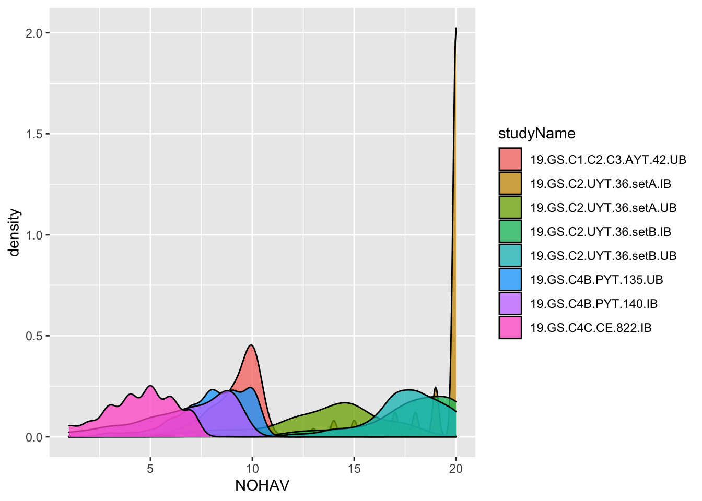
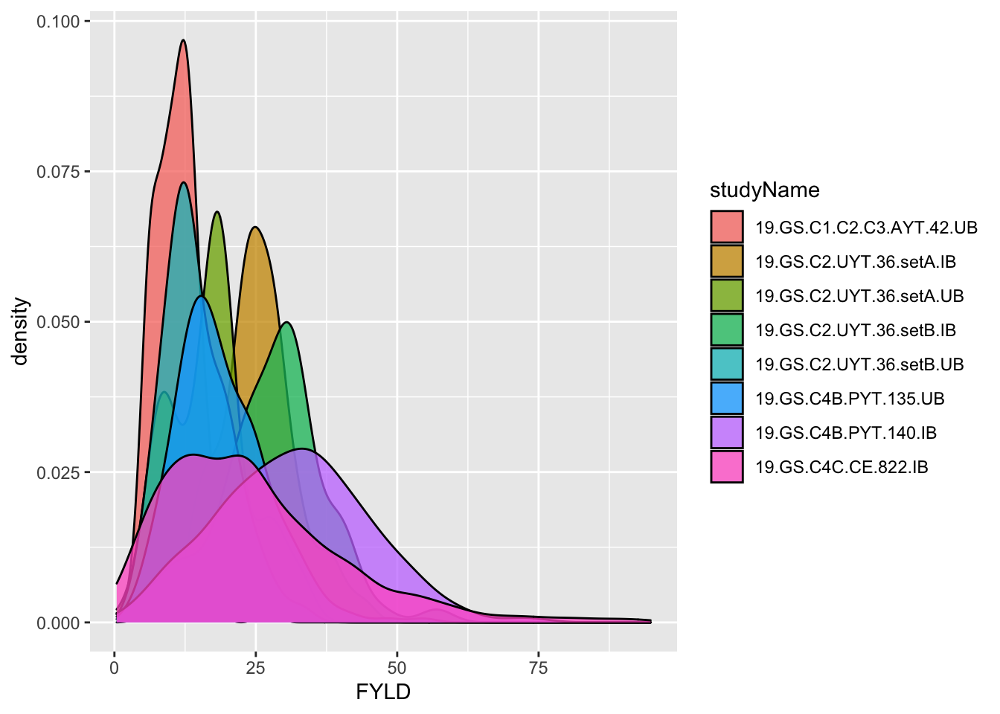
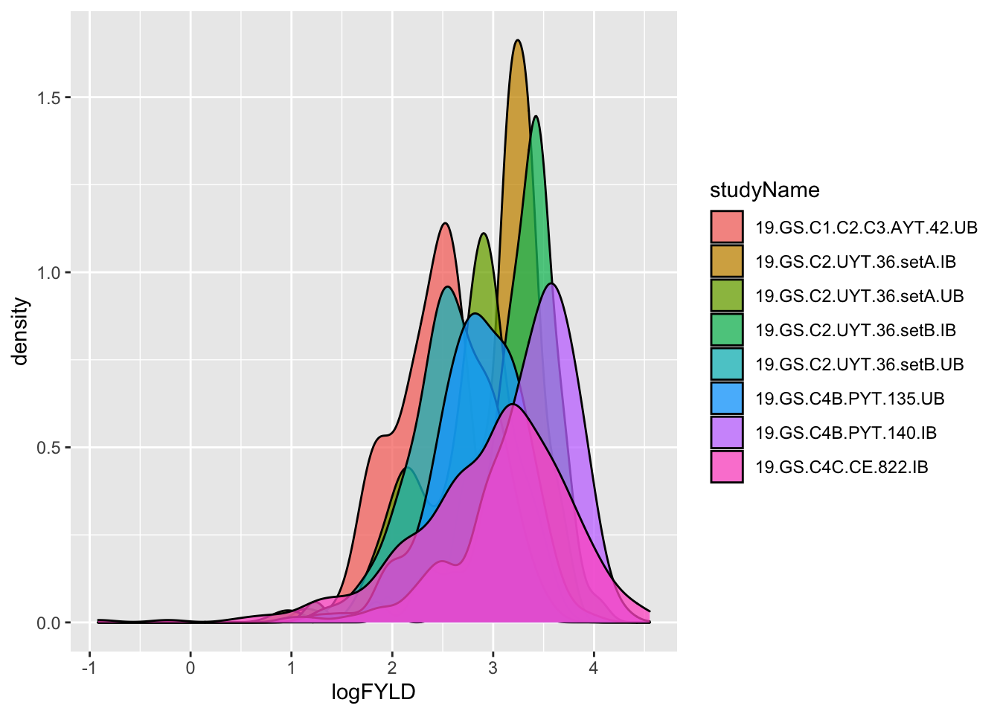

Prepare phenotype data
Marnin Wolfe
2022-03-25
Last updated: 2022-03-25
Checks: 7 0
Knit directory: GSexample2022/
This reproducible R Markdown analysis was created with workflowr (version 1.7.0). The Checks tab describes the reproducibility checks that were applied when the results were created. The Past versions tab lists the development history.
Great! Since the R Markdown file has been committed to the Git repository, you know the exact version of the code that produced these results.
Great job! The global environment was empty. Objects defined in the global environment can affect the analysis in your R Markdown file in unknown ways. For reproduciblity it’s best to always run the code in an empty environment.
The command set.seed(20220320) was run prior to running the code in the R Markdown file. Setting a seed ensures that any results that rely on randomness, e.g. subsampling or permutations, are reproducible.
Great job! Recording the operating system, R version, and package versions is critical for reproducibility.
Nice! There were no cached chunks for this analysis, so you can be confident that you successfully produced the results during this run.
Great job! Using relative paths to the files within your workflowr project makes it easier to run your code on other machines.
Great! You are using Git for version control. Tracking code development and connecting the code version to the results is critical for reproducibility.
The results in this page were generated with repository version 11eeb79. See the Past versions tab to see a history of the changes made to the R Markdown and HTML files.
Note that you need to be careful to ensure that all relevant files for the analysis have been committed to Git prior to generating the results (you can use wflow_publish or wflow_git_commit). workflowr only checks the R Markdown file, but you know if there are other scripts or data files that it depends on. Below is the status of the Git repository when the results were generated:
Ignored files:
Ignored: .Rproj.user/
Untracked files:
Untracked: .DS_Store
Untracked: Icon
Untracked: analysis/.DS_Store
Untracked: analysis/Icon
Untracked: analysis/images/Icon
Untracked: analysis/images/paste-2F34C15B.png
Untracked: analysis/images/paste-AD7AEEAC.png
Untracked: analysis/images/paste-CB5D91AC.png
Untracked: code/Icon
Untracked: data/BreedBaseGenotypesDownload.vcf
Untracked: data/Icon
Untracked: output/Icon
Untracked: output/phenotypes_cleaned.rds
Note that any generated files, e.g. HTML, png, CSS, etc., are not included in this status report because it is ok for generated content to have uncommitted changes.
These are the previous versions of the repository in which changes were made to the R Markdown (analysis/clean_phenos.Rmd) and HTML (docs/clean_phenos.html) files. If you’ve configured a remote Git repository (see ?wflow_git_remote), click on the hyperlinks in the table below to view the files as they were in that past version.
| File | Version | Author | Date | Message |
|---|---|---|---|---|
| Rmd | 11eeb79 | wolfemd | 2022-03-25 | Publish cleaned phenotypes. |
library(tidyverse);── Attaching packages ─────────────────────────────────────── tidyverse 1.3.1 ──✓ ggplot2 3.3.5 ✓ purrr 0.3.4
✓ tibble 3.1.6 ✓ dplyr 1.0.7
✓ tidyr 1.1.4 ✓ stringr 1.4.0
✓ readr 2.1.1 ✓ forcats 0.5.1── Conflicts ────────────────────────────────────────── tidyverse_conflicts() ──
x dplyr::filter() masks stats::filter()
x dplyr::lag() masks stats::lag()library(genomicMateSelectR)Read DB data
here::here("data","phenotype.csv")[1] "/Users/mw489/My Drive/Teaching/GSworkshop_2022/GSexample2022/data/phenotype.csv"dbdata<-readDBdata(phenotypeFile = here::here("data","phenotype.csv"),
metadataFile = here::here("data","metadata.csv"))Joining, by = c("studyYear", "programDbId", "programName", "programDescription", "studyDbId", "studyName", "studyDescription", "studyDesign", "plotWidth", "plotLength", "fieldSize", "fieldTrialIsPlannedToBeGenotyped", "fieldTrialIsPlannedToCross", "plantingDate", "harvestDate", "locationDbId", "locationName")Check experimental designs
Checklist: Are the data plot-basis, plant-basis or a mixture? If plant-basis data are present, should they be converted to plot-basis for further analysis?
dbdata %>% count(observationLevel) observationLevel n
1 plot 2515What experimental designs are present? How are they represented by the variables in the dataset? Are all designs consistent with your expectations, for example relative to the reported “trialType,” “studyName” and/or “studyDesign?”
dbdata %>%
count(studyName,trialType, studyDesign, numberBlocks,numberReps,entryType) %>%
spread(entryType,n) studyName trialType studyDesign numberBlocks
1 17.GS.GeneticGain.UB genetic_gain_trial Augmented 11
2 19.GS.C1.C2.C3.AYT.42.UB <NA> Alpha NA
3 19.GS.C2.UYT.36.setA.IB Uniform Yield Trial Alpha 6
4 19.GS.C2.UYT.36.setA.UB Uniform Yield Trial Alpha 6
5 19.GS.C2.UYT.36.setB.IB Uniform Yield Trial RCBD 6
6 19.GS.C2.UYT.36.setB.UB Uniform Yield Trial Alpha 6
7 19.GS.C4B.PYT.135.UB Preliminary Yield Trial Alpha 30
8 19.GS.C4B.PYT.140.IB Preliminary Yield Trial Alpha 28
9 19.GS.C4C.CE.822.IB Clonal Evaluation RCBD 42
numberReps check test
1 1 18 774
2 NA 15 110
3 2 10 58
4 2 10 62
5 2 10 56
6 2 10 62
7 2 12 258
8 2 31 242
9 1 132 645Next, I’ll check if the replicate and blockNumber columns reliably distinguish complete and incomplete blocks in the data.
dbdata %>%
group_by(studyName) %>%
summarize(N_replicate=length(unique(replicate)),
N_blockNumber=length(unique(blockNumber)))# A tibble: 9 × 3
studyName N_replicate N_blockNumber
<chr> <int> <int>
1 17.GS.GeneticGain.UB 1 11
2 19.GS.C1.C2.C3.AYT.42.UB 3 3
3 19.GS.C2.UYT.36.setA.IB 2 6
4 19.GS.C2.UYT.36.setA.UB 2 6
5 19.GS.C2.UYT.36.setB.IB 2 6
6 19.GS.C2.UYT.36.setB.UB 2 6
7 19.GS.C4B.PYT.135.UB 2 30
8 19.GS.C4B.PYT.140.IB 2 28
9 19.GS.C4C.CE.822.IB 1 42The question is, are complete replications of the experiment indicated by replicate and incomplete sub-blocks represented by blockNumber
dbdata %>%
group_by(studyName) %>%
summarize(N_replicate=length(unique(replicate)),
N_blockNumber=length(unique(blockNumber)),
doRepsEqualBlocks=all(replicate==blockNumber))# A tibble: 9 × 4
studyName N_replicate N_blockNumber doRepsEqualBlocks
<chr> <int> <int> <lgl>
1 17.GS.GeneticGain.UB 1 11 FALSE
2 19.GS.C1.C2.C3.AYT.42.UB 3 3 TRUE
3 19.GS.C2.UYT.36.setA.IB 2 6 FALSE
4 19.GS.C2.UYT.36.setA.UB 2 6 FALSE
5 19.GS.C2.UYT.36.setB.IB 2 6 FALSE
6 19.GS.C2.UYT.36.setB.UB 2 6 FALSE
7 19.GS.C4B.PYT.135.UB 2 30 FALSE
8 19.GS.C4B.PYT.140.IB 2 28 FALSE
9 19.GS.C4C.CE.822.IB 1 42 FALSE Next, I decided to check that the replicate column definitely means complete blocks. The below might look a bit complicated, but I basically merge two summaries: (1) he overall number of accessions per trial, and (2) the average number of accessions per replicate per trial.
dbdata %>%
group_by(studyName) %>%
summarize(N_accession=length(unique(germplasmName)))# A tibble: 9 × 2
studyName N_accession
<chr> <int>
1 17.GS.GeneticGain.UB 753
2 19.GS.C1.C2.C3.AYT.42.UB 42
3 19.GS.C2.UYT.36.setA.IB 35
4 19.GS.C2.UYT.36.setA.UB 36
5 19.GS.C2.UYT.36.setB.IB 36
6 19.GS.C2.UYT.36.setB.UB 36
7 19.GS.C4B.PYT.135.UB 135
8 19.GS.C4B.PYT.140.IB 129
9 19.GS.C4C.CE.822.IB 657dbdata %>%
group_by(studyName,replicate) %>%
summarize(N_accession=length(unique(germplasmName))) %>%
group_by(studyName) %>%
summarize(avgAccessionsPerReplicate=ceiling(mean(N_accession)))`summarise()` has grouped output by 'studyName'. You can override using the `.groups` argument.# A tibble: 9 × 2
studyName avgAccessionsPerReplicate
<chr> <dbl>
1 17.GS.GeneticGain.UB 753
2 19.GS.C1.C2.C3.AYT.42.UB 42
3 19.GS.C2.UYT.36.setA.IB 34
4 19.GS.C2.UYT.36.setA.UB 36
5 19.GS.C2.UYT.36.setB.IB 33
6 19.GS.C2.UYT.36.setB.UB 36
7 19.GS.C4B.PYT.135.UB 135
8 19.GS.C4B.PYT.140.IB 127
9 19.GS.C4C.CE.822.IB 657# the overall number of accessions per trial
dbdata %>%
group_by(studyName) %>%
summarize(N_accession=length(unique(germplasmName))) %>%
# the average number of accessions per replicate per trial
left_join(dbdata %>%
group_by(studyName,replicate) %>%
summarize(N_accession=length(unique(germplasmName))) %>%
group_by(studyName) %>%
summarize(avgAccessionsPerReplicate=ceiling(mean(N_accession))))`summarise()` has grouped output by 'studyName'. You can override using the `.groups` argument.Joining, by = "studyName"# A tibble: 9 × 3
studyName N_accession avgAccessionsPerReplicate
<chr> <int> <dbl>
1 17.GS.GeneticGain.UB 753 753
2 19.GS.C1.C2.C3.AYT.42.UB 42 42
3 19.GS.C2.UYT.36.setA.IB 35 34
4 19.GS.C2.UYT.36.setA.UB 36 36
5 19.GS.C2.UYT.36.setB.IB 36 33
6 19.GS.C2.UYT.36.setB.UB 36 36
7 19.GS.C4B.PYT.135.UB 135 135
8 19.GS.C4B.PYT.140.IB 129 127
9 19.GS.C4C.CE.822.IB 657 657One more: look at the min, mean and max number of accessions per blockNumber
dbdata %>%
group_by(studyName,replicate,blockNumber) %>%
summarize(N_accession=length(unique(germplasmName))) %>% ungroup() %>%
group_by(studyName) %>%
summarize(minAccessionsPerBlock=ceiling(min(N_accession)),
avgAccessionsPerBlock=ceiling(mean(N_accession)),
maxAccessionsPerBlock=ceiling(max(N_accession)))`summarise()` has grouped output by 'studyName', 'replicate'. You can override using the `.groups` argument.# A tibble: 9 × 4
studyName minAccessionsPer… avgAccessionsPer… maxAccessionsPer…
<chr> <dbl> <dbl> <dbl>
1 17.GS.GeneticGain.UB 53 72 76
2 19.GS.C1.C2.C3.AYT.42.UB 41 42 42
3 19.GS.C2.UYT.36.setA.IB 11 12 12
4 19.GS.C2.UYT.36.setA.UB 12 12 12
5 19.GS.C2.UYT.36.setB.IB 9 11 12
6 19.GS.C2.UYT.36.setB.UB 12 12 12
7 19.GS.C4B.PYT.135.UB 9 9 9
8 19.GS.C4B.PYT.140.IB 8 10 10
9 19.GS.C4C.CE.822.IB 10 19 20CMD+I
dbdata %>%
group_by(studyName) %>%
summarize(N_accession=length(unique(germplasmName))) %>%
left_join(dbdata %>%
group_by(studyName,replicate,blockNumber) %>%
summarize(N_accession=length(unique(germplasmName))) %>% ungroup() %>%
group_by(studyName) %>%
summarize(minAccessionsPerBlock=ceiling(min(N_accession)),
avgAccessionsPerBlock=ceiling(mean(N_accession)),
maxAccessionsPerBlock=ceiling(max(N_accession))))`summarise()` has grouped output by 'studyName', 'replicate'. You can override using the `.groups` argument.Joining, by = "studyName"# A tibble: 9 × 5
studyName N_accession minAccessionsPer… avgAccessionsPer… maxAccessionsPer…
<chr> <int> <dbl> <dbl> <dbl>
1 17.GS.Genet… 753 53 72 76
2 19.GS.C1.C2… 42 41 42 42
3 19.GS.C2.UY… 35 11 12 12
4 19.GS.C2.UY… 36 12 12 12
5 19.GS.C2.UY… 36 9 11 12
6 19.GS.C2.UY… 36 12 12 12
7 19.GS.C4B.P… 135 9 9 9
8 19.GS.C4B.P… 129 8 10 10
9 19.GS.C4C.C… 657 10 19 20AYT trial does not have incomplete blocks… only complete blocks.
Now I will ad hoc create two variables (CompleteBlocks and IncompleteBlocks), indicating (TRUE/FALSE) whether to model using the replicate and/or blockNumber variable.
I also like to create explicitly nested design variables (yearInLoc, trialInLocYr, repInTrial, blockInRep).
dbdata %<>%
group_by(studyName) %>%
summarize(N_replicate=length(unique(replicate)),
N_blockNumber=length(unique(blockNumber)),
doRepsEqualBlocks=all(replicate==blockNumber)) %>%
ungroup() %>%
mutate(CompleteBlocks=ifelse(N_replicate>1,TRUE,FALSE),
IncompleteBlocks=ifelse(N_blockNumber>1 & !doRepsEqualBlocks,TRUE,FALSE)) %>%
left_join(dbdata) %>%
mutate(yearInLoc=paste0(programName,"_",locationName,"_",studyYear),
trialInLocYr=paste0(yearInLoc,"_",studyName),
repInTrial=paste0(trialInLocYr,"_",replicate),
blockInRep=paste0(repInTrial,"_",blockNumber))Joining, by = "studyName"dbdata %>%
count(studyName,CompleteBlocks,IncompleteBlocks) %>%
left_join(dbdata %>%
group_by(studyName) %>%
summarize(nRepInTrial=length(unique(repInTrial)),
nBlockInRep=length(unique(blockInRep))))Joining, by = "studyName"# A tibble: 9 × 6
studyName CompleteBlocks IncompleteBlocks n nRepInTrial nBlockInRep
<chr> <lgl> <lgl> <int> <int> <int>
1 17.GS.GeneticGa… FALSE TRUE 792 1 11
2 19.GS.C1.C2.C3.… TRUE FALSE 125 3 3
3 19.GS.C2.UYT.36… TRUE TRUE 68 2 6
4 19.GS.C2.UYT.36… TRUE TRUE 72 2 6
5 19.GS.C2.UYT.36… TRUE TRUE 66 2 6
6 19.GS.C2.UYT.36… TRUE TRUE 72 2 6
7 19.GS.C4B.PYT.1… TRUE TRUE 270 2 30
8 19.GS.C4B.PYT.1… TRUE TRUE 273 2 28
9 19.GS.C4C.CE.82… FALSE TRUE 777 1 42Traits and Trait Abbreviations
traitabbrevs<-tribble(~TraitAbbrev,~TraitName,
"CMD1S","cassava.mosaic.disease.severity.1.month.evaluation.CO_334.0000191",
"CMD3S","cassava.mosaic.disease.severity.3.month.evaluation.CO_334.0000192",
"CMD6S","cassava.mosaic.disease.severity.6.month.evaluation.CO_334.0000194",
"DM","dry.matter.content.percentage.CO_334.0000092",
"RTWT","fresh.storage.root.weight.per.plot.CO_334.0000012",
"NOHAV","plant.stands.harvested.counting.CO_334.0000010")
traitabbrevs# A tibble: 6 × 2
TraitAbbrev TraitName
<chr> <chr>
1 CMD1S cassava.mosaic.disease.severity.1.month.evaluation.CO_334.0000191
2 CMD3S cassava.mosaic.disease.severity.3.month.evaluation.CO_334.0000192
3 CMD6S cassava.mosaic.disease.severity.6.month.evaluation.CO_334.0000194
4 DM dry.matter.content.percentage.CO_334.0000092
5 RTWT fresh.storage.root.weight.per.plot.CO_334.0000012
6 NOHAV plant.stands.harvested.counting.CO_334.0000010 dbdata<-renameAndSelectCols(traitabbrevs,
indata=dbdata,
customColsToKeep = c("observationUnitName",
"CompleteBlocks",
"IncompleteBlocks",
"yearInLoc",
"trialInLocYr",
"repInTrial","blockInRep"))Joining, by = "TraitName"QC Trait Values
# comment out the traits not present in this dataset
dbdata<-dbdata %>%
dplyr::mutate(CMD1S=ifelse(CMD1S<1 | CMD1S>5,NA,CMD1S),
CMD3S=ifelse(CMD3S<1 | CMD3S>5,NA,CMD3S),
# CMD6S=ifelse(CMD6S<1 | CMD6S>5,NA,CMD6S),
# CMD9S=ifelse(CMD9S<1 | CMD9S>5,NA,CMD9S),
# CGM=ifelse(CGM<1 | CGM>5,NA,CGM),
# CGMS1=ifelse(CGMS1<1 | CGMS1>5,NA,CGMS1),
# CGMS2=ifelse(CGMS2<1 | CGMS2>5,NA,CGMS2),
DM=ifelse(DM>100 | DM<=0,NA,DM),
RTWT=ifelse(RTWT==0 | NOHAV==0 | is.na(NOHAV),NA,RTWT),
# SHTWT=ifelse(SHTWT==0 | NOHAV==0 | is.na(NOHAV),NA,SHTWT),
# RTNO=ifelse(RTNO==0 | NOHAV==0 | is.na(NOHAV),NA,RTNO),
NOHAV=ifelse(NOHAV==0,NA,NOHAV),
NOHAV=ifelse(NOHAV>42,NA,NOHAV)
# RTNO=ifelse(!RTNO %in% 1:10000,NA,RTNO)
)Post-QC: composite traits
Season-wide mean disease severity
dbdata<-dbdata %>%
mutate(MCMDS=rowMeans(.[,colnames(.) %in% c("CMD1S","CMD3S","CMD6S","CMD9S")], na.rm = T)) %>%
select(-any_of(c("CMD1S","CMD3S","CMD6S","CMD9S")))Fresh root yield (FYLD)
dbdata %>%
count(studyYear,studyName,studyDesign,plotWidth,plotLength,plantsPerPlot) %>%
mutate(plotArea=plotWidth*plotLength)# A tibble: 9 × 8
studyYear studyName studyDesign plotWidth plotLength plantsPerPlot n
<int> <chr> <chr> <int> <dbl> <lgl> <int>
1 2017 17.GS.GeneticG… Augmented 1 5 NA 792
2 2019 19.GS.C1.C2.C3… Alpha 4 4 NA 125
3 2019 19.GS.C2.UYT.3… Alpha 4 4 NA 68
4 2019 19.GS.C2.UYT.3… Alpha 4 4 NA 72
5 2019 19.GS.C2.UYT.3… RCBD 4 4 NA 66
6 2019 19.GS.C2.UYT.3… Alpha 4 4 NA 72
7 2019 19.GS.C4B.PYT.… Alpha 2 4 NA 270
8 2019 19.GS.C4B.PYT.… Alpha 3 2.5 NA 273
9 2019 19.GS.C4C.CE.8… RCBD 1 2.5 NA 777
# … with 1 more variable: plotArea <dbl>dbdata %>%
ggplot(.,aes(x=NOHAV, fill=studyName)) + geom_density(alpha=0.75)Warning: Removed 903 rows containing non-finite values (stat_density).
dbdata %>%
# plot area in meters squared
mutate(plotArea=plotWidth*plotLength) %>%
ggplot(.,aes(x=plotArea,y=NOHAV, fill=studyName)) +
geom_boxplot() + theme(axis.text.x = element_blank())Warning: Removed 903 rows containing non-finite values (stat_boxplot).
plantsPerPlot_choices<-dbdata %>%
distinct(studyYear,studyName,plotWidth,plotLength,plantsPerPlot) %>%
left_join(dbdata %>%
group_by(studyName) %>%
summarize(MaxNOHAV=max(NOHAV, na.rm=T))) %>%
# plot area in meters squared
mutate(plotArea=plotWidth*plotLength,
# Number of plants per plot
plantsPerPlot=MaxNOHAV,
plantsPerPlot=ifelse(studyName=="19.GS.C2.UYT.36.setA.UB",20,plantsPerPlot)) %>%
# exclude the empty genetic gain trial
filter(studyName!="19geneticgainUB") %>%
select(studyName,plotArea,MaxNOHAV,plantsPerPlot)Warning in max(NOHAV, na.rm = T): no non-missing arguments to max; returning
-InfJoining, by = "studyName"plantsPerPlot_choices# A tibble: 9 × 4
studyName plotArea MaxNOHAV plantsPerPlot
<chr> <dbl> <dbl> <dbl>
1 17.GS.GeneticGain.UB 5 -Inf -Inf
2 19.GS.C1.C2.C3.AYT.42.UB 16 10 10
3 19.GS.C2.UYT.36.setA.IB 16 20 20
4 19.GS.C2.UYT.36.setA.UB 16 18 20
5 19.GS.C2.UYT.36.setB.IB 16 20 20
6 19.GS.C2.UYT.36.setB.UB 16 20 20
7 19.GS.C4B.PYT.135.UB 8 10 10
8 19.GS.C4B.PYT.140.IB 7.5 9 9
9 19.GS.C4C.CE.822.IB 2.5 7 7dbdata %<>%
select(-plantsPerPlot) %>%
# join plantsPerPlot_choices to the trial data
left_join(plantsPerPlot_choices) %>%
# compute fresh root yield (FYLD) in tons per hectare
mutate(PlantSpacing=plotArea/plantsPerPlot,
FYLD=RTWT/(plantsPerPlot*PlantSpacing)*10)Joining, by = "studyName"dbdata %>% ggplot(.,aes(x=FYLD,fill=studyName)) + geom_density(alpha=0.75)Warning: Removed 925 rows containing non-finite values (stat_density).
# I log transform yield traits
# to satisfy homoskedastic residuals assumption
# of linear mixed models
dbdata %<>%
mutate(DYLD=FYLD*(DM/100),
logFYLD=log(FYLD),
logDYLD=log(DYLD),
PropNOHAV=NOHAV/plantsPerPlot)
# remove non transformed / per-plot (instead of per area) traits
dbdata %<>% select(-RTWT,-FYLD,-DYLD)
dbdata %>% ggplot(.,aes(x=logFYLD,fill=studyName)) + geom_density(alpha=0.75)Warning: Removed 925 rows containing non-finite values (stat_density).
Save cleaned phenos
saveRDS(dbdata,file=here::here("output","phenotypes_cleaned.rds"))
sessionInfo()R version 4.1.1 (2021-08-10)
Platform: x86_64-apple-darwin17.0 (64-bit)
Running under: macOS Big Sur 10.16
Matrix products: default
BLAS: /Library/Frameworks/R.framework/Versions/4.1/Resources/lib/libRblas.0.dylib
LAPACK: /Library/Frameworks/R.framework/Versions/4.1/Resources/lib/libRlapack.dylib
locale:
[1] en_US.UTF-8/en_US.UTF-8/en_US.UTF-8/C/en_US.UTF-8/en_US.UTF-8
attached base packages:
[1] stats graphics grDevices utils datasets methods base
other attached packages:
[1] genomicMateSelectR_0.2.0 forcats_0.5.1 stringr_1.4.0
[4] dplyr_1.0.7 purrr_0.3.4 readr_2.1.1
[7] tidyr_1.1.4 tibble_3.1.6 ggplot2_3.3.5
[10] tidyverse_1.3.1 workflowr_1.7.0
loaded via a namespace (and not attached):
[1] Rcpp_1.0.7 here_1.0.1 lubridate_1.8.0 getPass_0.2-2
[5] ps_1.6.0 assertthat_0.2.1 rprojroot_2.0.2 digest_0.6.29
[9] utf8_1.2.2 R6_2.5.1 cellranger_1.1.0 backports_1.4.1
[13] reprex_2.0.1 evaluate_0.14 highr_0.9 httr_1.4.2
[17] pillar_1.6.4 rlang_0.4.12 readxl_1.3.1 rstudioapi_0.13
[21] whisker_0.4 callr_3.7.0 jquerylib_0.1.4 rmarkdown_2.11
[25] labeling_0.4.2 munsell_0.5.0 broom_0.7.11 compiler_4.1.1
[29] httpuv_1.6.5 modelr_0.1.8 xfun_0.29 pkgconfig_2.0.3
[33] htmltools_0.5.2 tidyselect_1.1.1 fansi_0.5.0 crayon_1.4.2
[37] tzdb_0.2.0 dbplyr_2.1.1 withr_2.4.3 later_1.3.0
[41] grid_4.1.1 jsonlite_1.7.2 gtable_0.3.0 lifecycle_1.0.1
[45] DBI_1.1.2 git2r_0.29.0 magrittr_2.0.1 scales_1.1.1
[49] cli_3.1.0 stringi_1.7.6 farver_2.1.0 fs_1.5.2
[53] promises_1.2.0.1 xml2_1.3.3 bslib_0.3.1 ellipsis_0.3.2
[57] generics_0.1.1 vctrs_0.3.8 tools_4.1.1 glue_1.6.0
[61] hms_1.1.1 processx_3.5.2 fastmap_1.1.0 yaml_2.2.1
[65] colorspace_2.0-2 rvest_1.0.2 knitr_1.37 haven_2.4.3
[69] sass_0.4.0